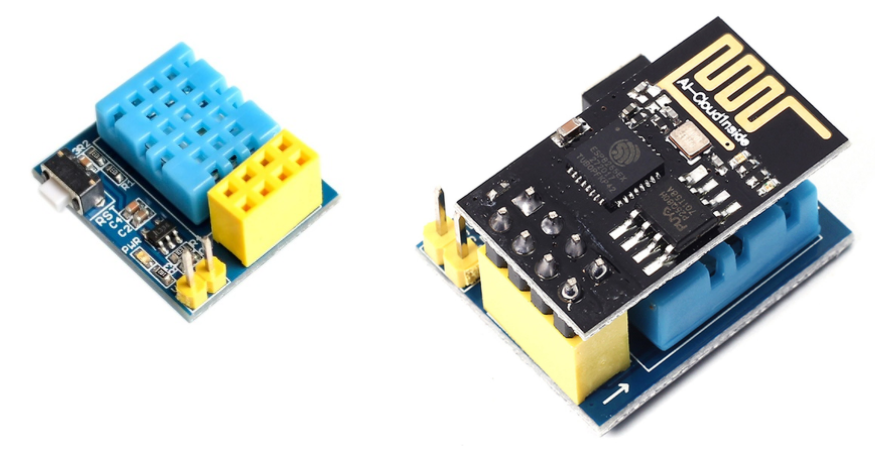
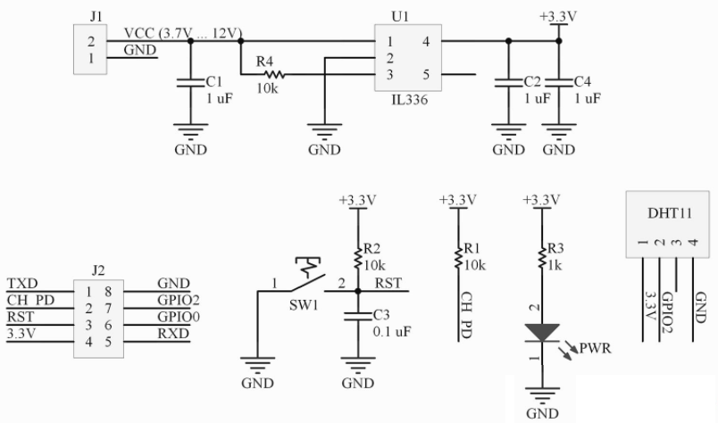
ESP-01S DHT11 v1.0
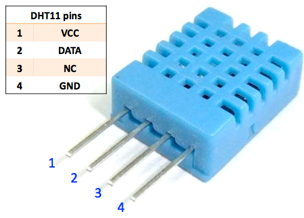

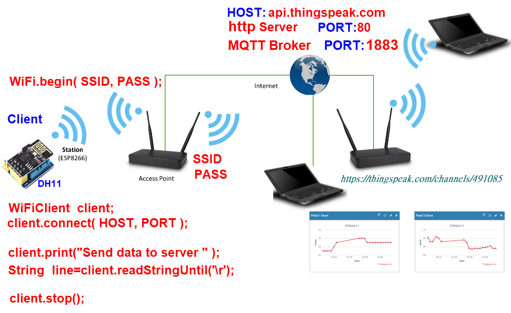 ESP8266 對 Access Point(寬頻分享器)而言為 Station api.thingspeak.com 為HTTP Server ESP8266為Client |
| ThingSpeak stores data in channels. Channels support an unlimited number of timestamped observations (think of these as rows in a spreadsheet). Each channel has up to 8 fields (think of these as columns in a speadsheet). Channels may be public, where anyone can see the data, or private, where only the owner and select users can read the data. Each channel has an associated Write API Key that is used to control who can write to a channel. In addition, private channels have one or more Read API Keys to control who can read from private channel. An API Key is not required to read from public channels. Each channel can have up to 8 fields. One field is created by default. 1channel 最多可有 8個 Field public channel :Write API Key private channel:Write API Key ,Read API Key ThingSpeak有提供免費、非商業用途的IoT雲端服務，使用此免費方案時，物聯網裝置的訊息發送時間間隔不可小於15秒、每年可發送300萬則訊息（每一天約8200則）。 ThingSpeak平台的資料儲存空間叫做Channel（通道），每次上傳的資料最多能有8個欄位（field）。例如，從控制板送出溫度和濕度資料，就需要「溫度」和「濕度」兩個欄位。 ThingSpeak提供前端兩種上傳資料的方式： REST：透過GET或POST的HTTP協定上傳資料。 MQTT：使用輕量的通訊協定上傳資料。 |
| ThingSpeak 申請帳號 |
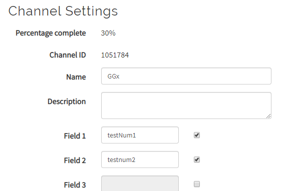 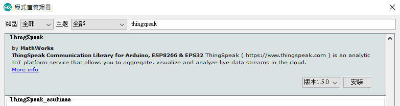 #include <ThingSpeak.h> #include <ESP8266WiFi.h> //---------------- Fill in your credentails --------------------- char ssid[] = "RouterSSID"; char pass[] = "RouterPassword"; unsigned long channelID =10*****84; const char * myWriteAPIKey = "CP********EY"; //------------------------------------------------------------------ WiFiClient client; int value = 0; void setup() { //Initialize serial and wait for port to open: Serial.begin(115200); while (!Serial) { ; // wait for serial port to connect. Needed for native USB port only } WiFi.mode(WIFI_STA); ThingSpeak.begin(client); } void loop() { // Connect or reconnect to WiFi if(WiFi.status() != WL_CONNECTED){ Serial.println(""); Serial.print("Attempting to connect to SSID: "); Serial.print(ssid); while(WiFi.status() != WL_CONNECTED){ WiFi.begin(ssid, pass); Serial.print("."); delay(5000); } Serial.println("\nConnected."); } // Write to ThingSpeak. There are up to 8 fields in a channel, allowing you to store up to 8 different // pieces of information in a channel. Here, we write to field 1. int x = ThingSpeak.writeField(channelID, 1, value, myWriteAPIKey); // Check the return code if(x == 200){ Serial.println("Channel update successful."); } else{ Serial.println("Problem updating channel. HTTP error code " + String(x)); } value++; if(value > 99){ value = 0; } delay(20000); // Wait 20 seconds before sending a new value } |
| DHT11 |
  ESP-01S DHT11 v1.0  |
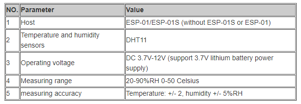 |
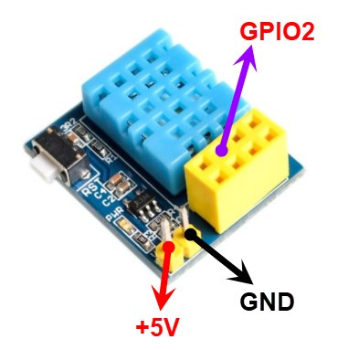 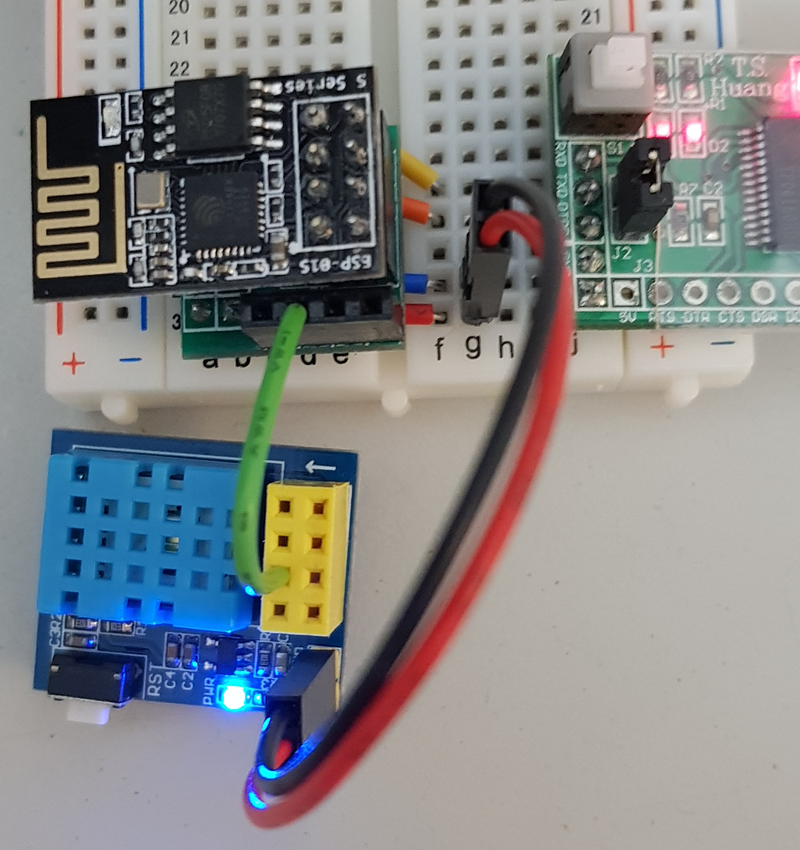 |
Create a new channel 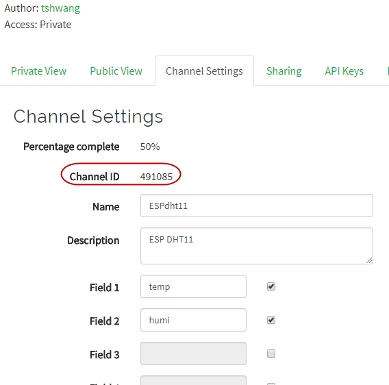 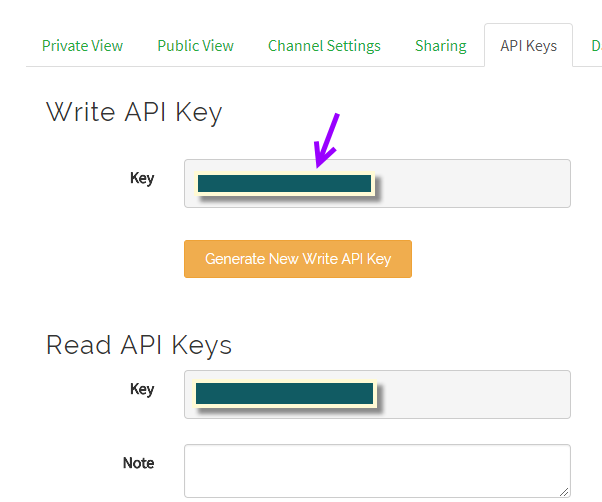 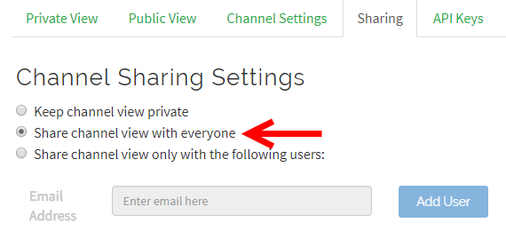 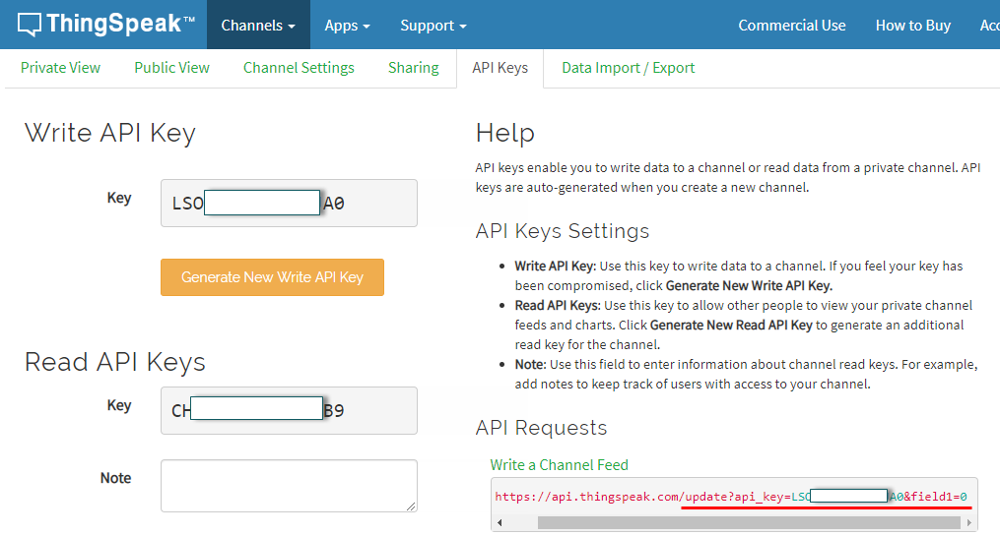 |
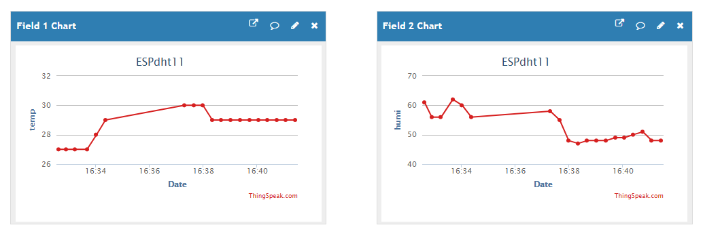 https://thingspeak.com https://thingspeak.com/channels/491085 |
| 1. 使用ThingSpeak.h---Write, Read 2. 使用ESP8266HTTPClient.h---GET, POST 3. 使用ESP8266WiFi.h ----GET , POST |
#include <DHTesp.h> #include <ThingSpeak.h> #include <ESP8266WiFi.h> //*-- IoT Information #define SSID "Router SSID" #define PASS "Router Password" //----------- Channel details ----------------// unsigned long Channel_ID = xxxxx; // Your Channel ID #define myWriteAPIKey "xxxxxxxxxxx" //Your write API key //-------------------------------------------// #define Field_Number_1 1 #define Field_Number_2 2 DHTesp dht; WiFiClient client; float temperature, humidity; void setup() { dht.setup(2, DHTesp::DHT11); Serial.begin( 115200 ); Serial.println( "ESP8266 Ready!" ); ThingSpeak.begin(client); // Connecting to a WiFi network Serial.print("Connect to "); Serial.println( SSID ); WiFi.begin( SSID, PASS ); while( WiFi.status() != WL_CONNECTED ) { delay(500); Serial.print( "." ); } Serial.println( "" ); Serial.println( "WiFi connected" ); Serial.println( "IP address: " ); Serial.println( WiFi.localIP() ); Serial.println( "" ); } void loop() { humidity= dht.getHumidity(); temperature = dht.getTemperature(); // 確認取回的溫溼度數據可用 if( isnan( humidity ) || isnan( temperature ) ) { Serial.println( "Failed to read form DHT11" ); return; } else { // DHT11 溫度與濕度傳送 Serial.print( "Humidity: " ); Serial.print( humidity ); Serial.print( ", Temperature: " ); Serial.println( temperature ); updateDHT11(); } } void updateDHT11() { ThingSpeak.writeField(Channel_ID, Field_Number_1, String((int)temperature), myWriteAPIKey); delay(15000); ThingSpeak.writeField(Channel_ID, Field_Number_2, String((int)humidity), myWriteAPIKey); delay(15000); } |
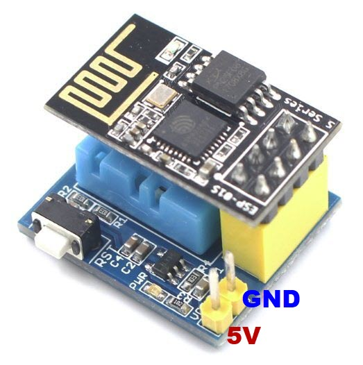 |
| //移除Serial #include <DHTesp.h> #include <ThingSpeak.h> #include <ESP8266WiFi.h> //*-- IoT Information #define SSID "Router SSID" #define PASS "Router Password" //----------- Channel details ----------------// unsigned long Channel_ID = xxxxx; // Your Channel ID #define myWriteAPIKey "xxxxxxxxxxx" //Your write API key //-------------------------------------------// #define Field_Number_1 1 #define Field_Number_2 2 DHTesp dht; WiFiClient client; float temperature, humidity; void setup() { dht.setup(2, DHTesp::DHT11); ThingSpeak.begin(client); WiFi.begin( SSID, PASS ); while( WiFi.status() != WL_CONNECTED ) { delay(500); } } void loop() { humidity= dht.getHumidity(); temperature = dht.getTemperature(); // 確認取回的溫溼度數據可用 if( isnan( humidity ) || isnan( temperature ) ) { return; } else { updateDHT11(); } } void updateDHT11() { ThingSpeak.writeField(Channel_ID, Field_Number_1, String((int)temperature), myWriteAPIKey); delay(15000); ThingSpeak.writeField(Channel_ID, Field_Number_2, String((int)humidity), myWriteAPIKey); delay(15000); } |
| Read From Thingspeak ThingSpeak Library(gitHub)(.zip) 請先下載安裝Library
|
| https://api.thingspeak.com/channels/935349/feeds.json?results=1 https://api.thingspeak.com/channels/935349/feeds.xml?results=1 https://api.thingspeak.com/channels/935349/feeds.csv?results=1 935349 為channel ID read data(web) |
| 2. 使用 ESP8266HTTPClient.h |
| //Example 2.1 使用範例 #include <ESP8266WiFi.h> #include <ESP8266HTTPClient.h> #define SSID "ampTony" #define PASS "123456789A" void setup() { Serial.begin( 115200 ); Serial.println( "ESP8266 Ready!" ); // Connecting to a WiFi network Serial.print("Connect to "); Serial.println( SSID ); WiFi.begin( SSID, PASS ); while( WiFi.status() != WL_CONNECTED ) { delay(500); Serial.print( "." ); } Serial.println( "" ); Serial.println( "WiFi connected" ); Serial.println( "IP address: " ); Serial.println( WiFi.localIP() ); Serial.println( "" ); } void loop() { if (WiFi.status() == WL_CONNECTED) { WiFiClient client; HTTPClient http; Serial.print("[HTTP] begin...\n"); if (http.begin(client, "http://iot.ntue.edu.tw/EL/ESP8266/httpClientTest.html")) { Serial.print("[HTTP] GET...\n"); // start connection and send HTTP header int httpCode = http.GET(); // httpCode will be negative on error if (httpCode > 0) { // HTTP header has been send and Server response header has been handled Serial.printf("[HTTP] GET... code: %d\n", httpCode); // file found at server if (httpCode == HTTP_CODE_OK || httpCode == HTTP_CODE_MOVED_PERMANENTLY) { String payload = http.getString(); Serial.println(payload); } } else { Serial.printf("[HTTP] GET... failed, error:%s\n",http.errorToString(httpCode).c_str()); } http.end(); } else { Serial.printf("[HTTP} Unable to connect\n"); } } delay(10000); } |
| //Example 2.2 #include <ESP8266HTTPClient.h> HTTPClient _httpClient; UrlString = String("http://api.thingspeak.com/update?api_key=XXXX") + "&field1=" + String((int)temperature) + "&field2=" + String((int)humidity);//XXXX替換為你的APIKeys _httpClient.begin(UrlString); int httpCode = _httpClient.GET(); //Send the request String payload = _httpClient.getString(); //Get the response payload Serial.println(httpCode); //Print HTTP return code Serial.println(payload); //Print request response payload _httpClient.end(); //Close connection delay(15000); |
| //Example 2.3 //使用ESP8266HTTPClient GET #include <DHTesp.h> #include <ESP8266WiFi.h> #include <ESP8266HTTPClient.h> #define wKey "LSODUBHEK01D9JA0" DHTesp dht; //*-- IoT Information #define mSSID "RouterSSID" #define PASS "RouterPWD" String UrlString;//thingSpeak網站傳送get請求的url HTTPClient _httpClient; int _httpGET(String url) { _httpClient.end(); _httpClient.begin(url); return _httpClient.GET(); } float temperature, humidity; void setup() { dht.setup(2, DHTesp::DHT11); Serial.begin( 115200 ); Serial.println( "ESP8266 Ready!" ); // Connecting to a WiFi network Serial.print("Connect to "); Serial.println( mSSID ); WiFi.begin( mSSID, PASS ); while( WiFi.status() != WL_CONNECTED ) { delay(500); Serial.print( "." ); } Serial.println( "" ); Serial.println( "WiFi connected" ); Serial.println( "IP address: " ); Serial.println( WiFi.localIP() ); Serial.println( "" ); } void loop() { humidity= dht.getHumidity(); temperature = dht.getTemperature(); // 確認取回的溫溼度數據可用 if( isnan( humidity ) || isnan( temperature ) ) { Serial.println( "Failed to read form DHT11" ); return; } else { // DHT11 溫度與濕度傳送 Serial.print( "Humidity: " ); Serial.print( humidity ); Serial.print( ", Temperature: " ); Serial.println( temperature ); updateDHT11(); } } void updateDHT11() { UrlString = String("http://api.thingspeak.com/update?api_key=") +wKey+"&field1="+String((int)temperature)+"&field2="+String((int)humidity); if (_httpGET(UrlString) > 0) { delay(15000); //thinkSpeak網站限制上傳頻率 所以這裡延時15s } } |
| //Example 2.4 //ESP8266HTTPClient GET //移除Serial #include <DHTesp.h> #include <ESP8266WiFi.h> #include <ESP8266HTTPClient.h> #define wKey "LSODUBHEK01D9JA0" DHTesp dht; //*-- IoT Information #define mSSID "RouterSSID" #define PASS "RouterPWD" String UrlString;//thingSpeak網站傳送get請求的url HTTPClient _httpClient; int _httpGET(String url) { _httpClient.end(); _httpClient.begin(url); return _httpClient.GET(); } float temperature, humidity; void setup() { dht.setup(2, DHTesp::DHT11); WiFi.begin( mSSID, PASS ); while( WiFi.status() != WL_CONNECTED ) { delay(500); } } void loop() { humidity= dht.getHumidity(); temperature = dht.getTemperature(); // 確認取回的溫溼度數據可用 if( isnan( humidity ) || isnan( temperature ) ) { return; } else { // DHT11 溫度與濕度傳送 updateDHT11(); } } void updateDHT11() { UrlString = String("http://api.thingspeak.com/update?api_key=") +wKey+"&field1="+String((int)temperature)+"&field2="+String((int)humidity); if (_httpGET(UrlString) > 0) { delay(15000); //thinkSpeak網站限制上傳頻率 所以這裡延時15s } } |
| //Example 2.5 //ESP8266HTTPClient POST #include <DHTesp.h> #include <ESP8266WiFi.h> #include <ESP8266HTTPClient.h> #define SSID "Router SSID" #define PASS "Router PassWord" #define url "http://api.thingspeak.com/update/" #define THING_SPEAK_WRITE_API_KEY "Your Write API KEY" DHTesp dht; HTTPClient _httpClient; String params; float temperature, humidity; void setup() { dht.setup(2, DHTesp::DHT11); WiFi.begin( SSID, PASS ); while( WiFi.status() != WL_CONNECTED ) { delay(500);} Serial.println("WiFi connected"); } void loop() { humidity= dht.getHumidity(); temperature = dht.getTemperature(); // 確認取回的溫溼度數據可用 if( isnan( humidity ) || isnan( temperature ) ) { return; } else { // DHT11 溫度與濕度傳送 updateDHT11(); } } void updateDHT11() { params = "field1=" + String((int)temperature)+"&field2=" + String((int)humidity); _httpClient.begin(url); _httpClient.addHeader("X-THINGSPEAKAPIKEY", THING_SPEAK_WRITE_API_KEY); _httpClient.addHeader("Content-Type", "application/x-www-form-urlencoded"); if (_httpClient.POST(params)) { delay(15000); //thinkSpeak網站限制上傳頻率 所以這裡延時15s } _httpClient.end(); } |
| Documentation ESP8266HTTPClient(GitHub) |
| 3. 使用ESP8266WiFi.h ----GET , POST |
| Client |
| HTTP get Client request GET /index.html HTTP/1.1 Host: www.example.com client.print("GET /index.html" + " HTTP/1.1\r\n" ) client.print("Host:www.example.com\r\n") client.print("Connection: close\r\n\r\n") A client request (consisting in this case of the request line and only one header field) is followed by a blank line, so that the request ends with a double newline, each in the form of a carriage return followed by a line feed. The "Host" field distinguishes between various DNS names sharing a single IP address, allowing name-based virtual hosting. While optional in HTTP/1.0, it is mandatory in HTTP/1.1. |
| Request
the Data If connection is successful, we should send request the host to provide specific information we need. This is done using the HTTP GET request as in the following lines: client.print("GET /index.html" + " HTTP/1.1\r\n" ) client.print("Host:www.example.com\r\n") client.print("Connection: close\r\n") client.print("\r\n"); Read Reply from the Server Then, while connection by our client is still alive (while (client.connected()), see below) we can read line by line and print out server’s response: while (client.connected()) { if (client.available()) { String line = client.readStringUntil('\n'); Serial.println(line); } } The inner if (client.available()) is checking if there are any data available from the server. If so, then they are printed out. Once server sends all requested data it will disconnect and program will exit the while loop. |
使用WiFiClient
|
| //Example 3.1 //使用WiFiClient GET #include <DHTesp.h> #include <ESP8266WiFi.h> DHTesp dht; //*-- IoT Information #define SSID "路由器名稱" #define PASS "路由器連線密碼" #define HOST "api.thingspeak.com" // ThingSpeak IP Address: 184.106.153.149 #define PORT 80 String writeAPIKey="LSXXXXXXXXXXJA0"; // 換上自己的 Write API Key // 設定 ESP8266 作為 Client 端 WiFiClient client; float temperature, humidity; void setup() { dht.setup(2, DHTesp::DHT11); Serial.begin( 115200 ); Serial.println( "ESP8266 Ready!" ); // Connecting to a WiFi network Serial.print("Connect to "); Serial.println( SSID ); WiFi.begin( SSID, PASS ); //因不需由外部連入 使用Router分配動態IP即可 // 持續等待並連接到指定的 WiFi SSID while( WiFi.status() != WL_CONNECTED ) { delay(500); Serial.print( "." ); } Serial.println( "" ); Serial.println( "WiFi connected" ); Serial.println( "IP address: " ); Serial.println( WiFi.localIP() ); Serial.println( "" ); } void loop() { humidity= dht.getHumidity(); temperature = dht.getTemperature(); // 確認取回的溫溼度數據可用 if( isnan( humidity ) || isnan( temperature ) ) { Serial.println( "Failed to read form DHT11" ); return; } else { // DHT11 溫度與濕度傳送 Serial.print( "Humidity: " ); Serial.print( humidity ); Serial.print( ", Temperature: " ); Serial.println( temperature ); updateDHT11(); } // 每隔多久傳送一次資料 delay( 20000 ); // 20 second } void updateDHT11() { if( !client.connect( HOST, PORT ) ) { Serial.println( "connection failed" ); return; } else { // 準備上傳到 ThingSpeak IoT Server 的資料 // 已經預先設定好 ThingSpeak IoT Channel 的欄位 // field1：溫度；field2：濕度 /* 使用 GET 傳送資料的格式 GET /update?key=[THINGSPEAK_KEY]&field1=[data 1]&filed2=[data 2]...; */ String getStr = "GET /update?key="+ writeAPIKey + "&field1=" + String((int)temperature) + "&field2=" + String((int)humidity) + " HTTP/1.1\r\n"; client.print( getStr ); client.print( "Host: api.thingspeak.com\r\n" ); client.print( "Connection: close\r\n\r\n" ); delay(10); // // 處理遠端伺服器回傳的訊息，程式碼可以寫在這裡！ // client.stop(); } } |
| //Example 3.2 //使用WiFiClient GET #include <DHTesp.h> #include <ESP8266WiFi.h> DHTesp dht; //*-- IoT Information #define SSID "路由器名稱" #define PASS "路由器連線密碼" #define HOST "api.thingspeak.com" // ThingSpeak IP Address: 184.106.153.149 #define PORT 80 String writeAPIKey="LSXXXXXXXXXXJA0"; // 換上自己的 Write API Key WiFiClient client; float temperature, humidity; void setup() { dht.setup(2, DHTesp::DHT11); WiFi.begin( SSID, PASS ); } void loop() { humidity= dht.getHumidity(); temperature = dht.getTemperature(); updateDHT11(); delay( 20000 ); // 20 second } void updateDHT11() { client.connect( HOST, PORT ); String getStr = "GET /update?key="+ writeAPIKey + "&field1=" + String((int)temperature) + "&field2=" + String((int)humidity) + " HTTP/1.1\r\n"; client.print( getStr ); client.print( "Host: api.thingspeak.com\r\n" ); client.print( "Connection: close\r\n\r\n" ); delay(10); client.stop(); } |
| //Example 3.3 //使用WiFiClient POST #include <DHTesp.h> #include <ESP8266WiFi.h> DHTesp dht; //*-- IoT Information #define SSID "Router SSID" #define PASS "Router Password" #define HOST "api.thingspeak.com" // ThingSpeak IP Address: 184.106.153.149 #define PORT 80 String APIKEY = "Your Write Key"; WiFiClient client; float temperature, humidity; void setup() { dht.setup(2, DHTesp::DHT11); Serial.begin( 115200 ); Serial.println( "ESP8266 Ready!" ); // Connecting to a WiFi network Serial.print("Connect to "); Serial.println( SSID ); WiFi.begin( SSID, PASS ); //因不需由外部連入 使用Router分配動態IP即可 // 持續等待並連接到指定的 WiFi SSID while( WiFi.status() != WL_CONNECTED ) { delay(500); Serial.print( "." ); } Serial.println( "" ); Serial.println( "WiFi connected" ); Serial.println( "IP address: " ); Serial.println( WiFi.localIP() ); Serial.println( "" ); } void loop() { humidity= dht.getHumidity(); temperature = dht.getTemperature(); // 確認取回的溫溼度數據可用 if( isnan( humidity ) || isnan( temperature ) ) { Serial.println( "Failed to read form DHT11" ); return; } else { // DHT11 溫度與濕度傳送 Serial.print( "Humidity: " ); Serial.print( humidity ); Serial.print( ", Temperature: " ); Serial.println( temperature ); updateDHT11(); } // 每隔多久傳送一次資料 delay( 20000 ); // 20 second } void updateDHT11() { // 設定 ESP8266 作為 Client 端 WiFiClient client; if( !client.connect( HOST, PORT ) ) { Serial.println( "connection failed" ); return; } else { // 準備上傳到 ThingSpeak IoT Server 的資料 // 已經預先設定好 ThingSpeak IoT Channel 的欄位 // field1：溫度；field2：濕度 String postStr = APIKEY + "&field1=" + String((int)temperature) + \ "&field2=" + String((int)humidity) + "\r\n\r\n"; client.print( "POST /update HTTP/1.1\n" ); client.print( "Host: api.thingspeak.com\n" ); client.print( "Connection: close\n" ); client.print( "X-THINGSPEAKAPIKEY: "+APIKEY+"\n" ); client.print( "Content-Type: application/x-www-form-urlencoded\n" ); client.print( "Content-Length: " ); client.print( postStr.length() ); client.print( "\n\n" ); client.print( postStr ); client.stop(); } } |